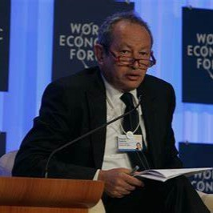

introduction
Jeffrey Preston Bezos (BAY-zohss né Jorgensen; born January 12, 1964) is an American business magnate best known as the founder, executive chairman, and former president and CEO of Amazon, the world's largest e-commerce and cloud computing company. He is the second wealthiest person in the world, with a net worth of US$ 211 billion as of July 16, 2024, according to Forbes. He was the wealthiest person from 2017 to 2021, according to both the Bloomberg Billionaires Index and Forbes.Bezos was born in Albuquerque and raised in Houston and Miami. He graduated from Princeton University in 1986 with degrees in electrical engineering and computer science. He worked on Wall Street in a variety of related fields from 1986 to early 1994. Bezos founded Amazon in mid-1994 on a road trip from New York City to Seattle. The company began as an online bookstore and has since expanded to a variety of other e-commerce products and services, including video and audio streaming, cloud computing, and artificial intelligence. It is the world's largest online sales company, the largest Internet company by revenue, and the largest provider of virtual assistants and cloud infrastructure services through its Amazon Web Services branch.
Early life
Jeffrey Preston Jorgensen was born on January 12, 1964, in Albuquerque, New Mexico, as the son of Jacklyn (née Gise) and Ted Jorgensen. At the time of Jeff's birth, his mother was a 17-year-old high-school student and his father was 19. Jorgensen was a Danish American unicyclist born in Chicago to a family of Baptists. After completing high school despite challenging conditions, Jacklyn attended night school, bringing her baby with her. Jeff attended a Montessori school in Albuquerque when he was 2 .Jorgensen drank and struggled financially. Jacklyn left her husband to live with her parents, filing for divorce in June 1965 when Jeff was 17-months-old. After his parents divorced, his mother married Cuban immigrant Miguel "Mike" Bezos in April 1968. Shortly after the wedding, Bezos adopted 4-year-old Jeff, whose surname was then legally changed from Jorgensen to Bezos. Gise, her husband and her son left the area and asked Jorgensen to discontinue contact, to which he agreed.

Education
Jeff attended River Oaks Elementary School in Houston from fourth to sixth grade. Jeff's maternal grandfather was Lawrence Preston Gise, a regional director of the U.S. Atomic Energy Commission (AEC) in Albuquerque. Lawrence retired early to his family's ranch near Cotulla, Texas, where his grandson would spend many summers in his youth and which he would later purchase and expand from 25,000 acres (10,117 ha) to 300,000 acres (121,406 ha). Jeff displayed scientific interests and technological proficiency and once rigged an electric alarm to keep his younger half-siblings out of his room. The family moved to Miami, Florida, where Jeff attended Miami Palmetto High School. In high school, he worked at McDonald's as a short-order line cook during the breakfast shift. Bezos attended the Student Science Training Program at the University of Florida. He was high school valedictorian, a National Merit Scholar, and a Silver Knight Award winner in 1982. In his graduation speech, Bezos told the audience he dreamed of the day when mankind would colonize space. A local newspaper quoted his intention "to get all people off the earth and see it turned into a huge national park". After graduating from high school in 1982, Bezos attended Princeton University. He initially majored in physics but later switched to electrical engineering and computer science. On 13 September 2018, during a talk at The Economic Club of Washington, D.C., Bezos revealed that his classmate at Princeton Yasantha Rajakarunanayake who was of Sri Lankan origin, some 30 years ago had defeated him to solve a mathematical problem and as a result, Bezos himself admitted that he gave up his dreams of becoming a theoretical physicist. Bezos was a member of the Quadrangle Club, one of Princeton's 11 eating clubs. In addition, he was the president of the Princeton chapter of the Students for the Exploration and Development of Space (SEDS). He had a 4.2 GPA and was elected to Phi Beta Kappa and Tau Beta Pi. Bezos graduated from Princeton in 1986 with a Bachelor of Science in Engineering (BSE), summa cum laude.
Personal life
In 1992, while Bezos was working for D. E. Shaw in Manhattan, he met novelist MacKenzie Tuttle, who was a research associate at the firm; the couple married a year later. In 1994, they moved across the country to Seattle, Washington, where Bezos founded Amazon. Bezos and his now ex-wife MacKenzie are the parents of four children: three sons and a daughter adopted from China. In March 2003, Bezos was a passenger in a helicopter that crashed in West Texas while surveying land to buy for Blue Origin; the other 3 occupants in the helicopter were pilot Charles "Cheater" Bella, Amazon lawyer Elizabeth Korrell, and local rancher Ty Holland.All survived; Bezos sustained only minor injuries and was discharged from a local hospital the same day. Bezos portrayed a Starfleet official in the 2016 movie Star Trek Beyond, and joined the cast and crew at a San Diego Comic-Con screening. He had lobbied Paramount for the role apropos of Alexa and his personal/professional interest in speech recognition. His one line consisted of a response to an alien in distress: "Speak Normally." In his initial discussion of the project which became Alexa with his technical advisor Greg Hart in 2011, Bezos told him that the goal was to create "the Star Trek computer. In January 2019, Bezos and his wife Mackenzie released a joint statement which revealed that they would be getting divorced after 25 years together. Subsequently, National Enquirer revealed that Bezos had an affair with media personality Lauren Sánchez; the affair with Sánchez had lasted for months. Later, Bezos published an online essay on February 7, 2019, in which he accused American Media, Inc. owner David Pecker of "extortion and blackmail" for threatening to publish intimate photos of Bezos and current girlfriend Lauren Sánchez if he did not stop his investigation into how his text messages and other photos had been leaked to the National Enquirer. Media reports have accused Sánchez's brother Michael of being the source for the photos obtained by National Enquirer; however, Bezos has speculated that it may have been the Saudi Arabian government. On April 4, 2019, the divorce was finalized, with Bezos keeping 75% of the couple's Amazon stock and MacKenzie getting the remaining 25% ($35.6 billion) in Amazon stock. However, Bezos would keep all of the couple's voting rights. On May 22, 2023, Sánchez and Bezos became engaged. He is the Honorary Chair of the Explorers Club.
Career
After Bezos graduated from college in 1986, he was offered jobs at Intel, Bell Labs, and Andersen Consulting, among others. He first worked at Fitel, a fintech telecommunications start-up, where he was tasked with building a network for international trade. Bezos was promoted to head of development and director of customer service thereafter. He transitioned into the banking industry when he became a product manager at Bankers Trust from 1988 to 1990. He then joined D. E. Shaw & Co, a newly created hedge fund with a strong emphasis on mathematical modelling from 1990 until 1994. Bezos became D. E. Shaw's fourth senior vice-president by age 30. Bezos founded the aerospace manufacturer and sub-orbital spaceflight services company Blue Origin in 2000. Blue Origin's New Shepard vehicle reached space in 2015 and afterwards successfully landed back on Earth; he flew into space on Blue Origin NS-16 in 2021. He also purchased the major American newspaper The Washington Post in 2013 for $250 million and manages many other investments through his venture capital firm, Bezos Expeditions. In September 2021, Bezos co-founded Altos Labs with Mail.ru founder Yuri Milner.[6] The first centibillionaire on the Forbes Real Time Billionaires Index and the second ever to have eclipsed the feat since Bill Gates in 1999, Bezos was named the "richest man in modern history" after his net worth increased to $150 billion in July 2018. In August 2020, according to Forbes, he had a net worth exceeding $200 billion. On July 5, 2021, Bezos stepped down as the CEO and president of Amazon and took over the role of executive chairman. Amazon Web Services CEO Andy Jassy succeeded Bezos as the CEO and president of Amazon.
